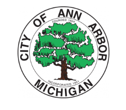
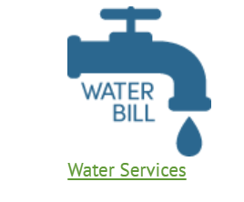
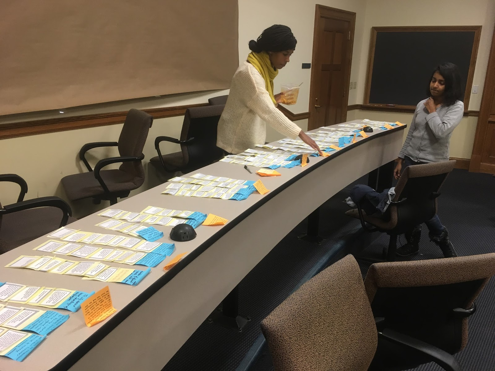
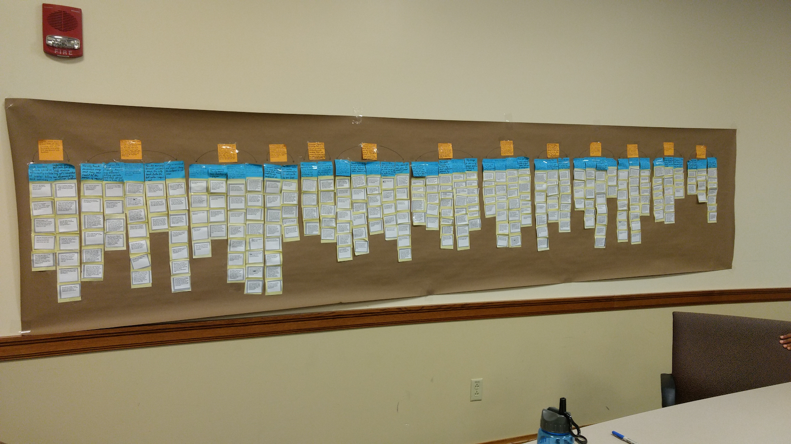
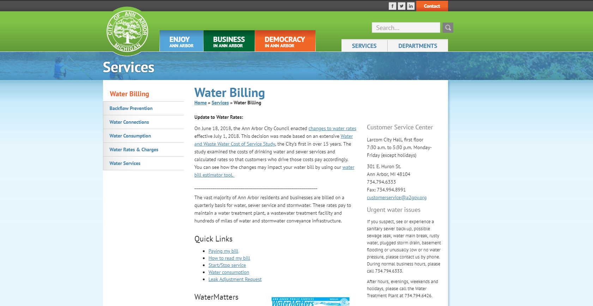

Contextual Inquiry for the City of Ann Arbor


Problem Statement
Every drop of water used in Ann Arbor must be charged to the appropriate party. Managing the transfer of water services in a college town where residents are constantly moving in and out is tedious and drains the City's staff and resources.
Research Questions
- How is the current transfer process affecting the workload of customer service and on-field crew staff?
- What steps can be taken to regulate or automate this process?
Methodology
To better understand the current process and how it affects each of three primary stakeholders involved, the City of Ann Arbor, property owners, and tenants. My team and I conducted on-site contextual inquiry interviews with members of the water department including two members of Customer Service and Billing team, two on-field crew members, the department treasurer, and the department system analyst. Interviews were also conducted with two tenants and two property owners in Ann Arbor.
Analysis
My team organized all the notes that we collected from our interviews with various stakeholders and condensed them into affinity notes. We then created an affinity wall and analyzed the themes that emerged from the data.


Primary Findings and Recommendations
- 1. Finding: Increase in workload is overwhelming, but manageable for customer service and on-field crew.
- Recommendation: Increase communication between management and customer service and on-field crew to create more awareness and understanding of the challenges they face in their work.
- 2. Finding: Tenants and property owners have limited access to information about the water transition process online. This leads to an increase in calls for customer service for inquiries rather than use of the online forms in place.
- Recommendation: Update the City's website with more information about the water transfer process for both tenants and property owners and make it more user friendly. This could lead to university students, who make up a significant portion tenants in Ann Arbor, using online forms and portals rather than calling customer service.
